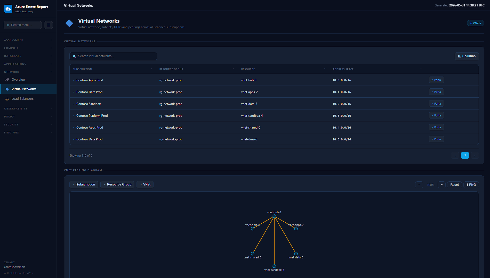
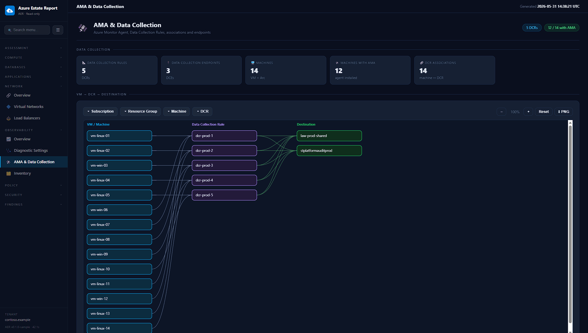
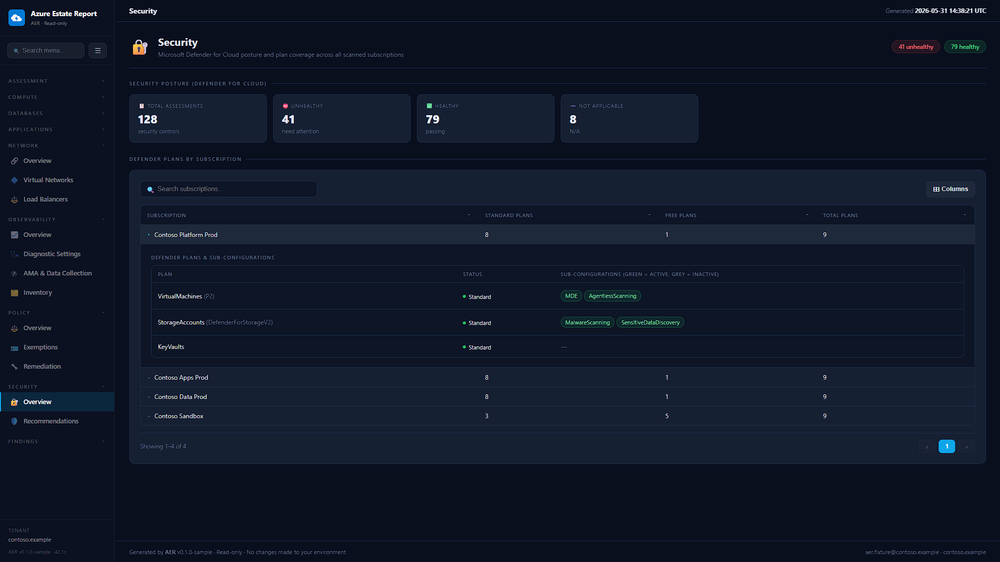
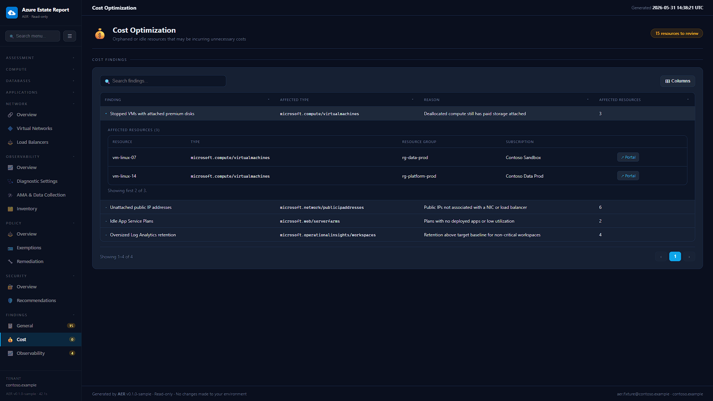

Visão geral
O AER (Azure Estate Report) é um módulo PowerShell 7 que produz um retrato completo e estruturado de um tenant Azure. Com um único comando ele descobre todas as assinaturas a que você tem acesso, coleta dados de inventário e configuração, e renderiza um dashboard HTML navegável, além de exportações em Excel e PDF — tudo gerado localmente e visualizável offline.
Foi desenhado para times de cloud, plataforma, governança, segurança, FinOps e operações que precisam documentar e revisar ambientes Azure para revisões de arquitetura, assessments de ambiente e relatórios de gestão de cloud.

Destaques
Um comando, ambiente inteiro
Invoke-AerReport descobre todas as assinaturas a que você tem acesso e produz um relatório completo.
100% somente-leitura
O AER nunca cria, altera ou remove nada no Azure. Seguro para rodar em produção.
Saída totalmente offline
HTML/CSS/JS puro com os dados embutidos — compartilhe a pasta, abra em uma máquina sem rede, anexe a um chamado.
Exportações Excel & PDF
A página inicial linka uma planilha Excel rica e um PDF pronto para compartilhar, gerados junto com o HTML.
Coleta rápida e paralela
Os coletores rodam em paralelo no tenant, com concorrência configurável.
UI moderna e navegável
Navegação lateral, tabelas com busca/filtro/redimensionamento, gráficos e diagramas interativos com zoom, pan e exportação PNG.
O que há no relatório
O relatório é organizado em oito domínios, cada um com uma ou mais páginas:
| Área | Páginas |
|---|---|
| Assessment | Visão geral · Inventário de recursos · Estrutura de cloud (management groups & assinaturas) · Azure Advisor |
| Compute | Máquinas virtuais · Virtual Machine Scale Sets |
| Bancos de dados | Visão geral · Relacional (incl. SQL em VM) · NoSQL · Cache · Analytics · Table Storage |
| Aplicações | Visão geral · Web / App Services · Functions & Logic Apps · Containers · API & Integração · AKS |
| Rede | Visão geral (utilização de IP, DNS, balanceadores) · Virtual Networks (subnets, UDRs, diagrama de peering) · Load Balancers |
| Observabilidade | Visão de cobertura · Diagnostic Settings · AMA & Coleta de dados (diagrama VM→DCR→destino) · Inventário (Log Analytics / App Insights) |
| Policy | Visão geral (conformidade, assignments por efeito) · Exemptions · Remediação |
| Segurança | Visão geral do Defender for Cloud (cobertura de planos) · Recomendações |
| Findings | Otimização de custo · Recomendações de observabilidade · Geral (gaps de segurança/config) |
Toda tabela de dados suporta busca global, filtros multi-seleção por coluna, exibir/ocultar colunas (persistido), redimensionamento de colunas, paginação e um accordion de detalhes expansível. Para um tour tela a tela, veja a Referência do relatório.




Exportações XLSX & PDF
Além do site HTML offline, cada execução cria uma pasta exports/ dentro de -OutputPath:
| Arquivo | Conteúdo |
|---|---|
exports/aer-report.xlsx |
Planilha Excel com uma primeira aba Dashboard, KPIs executivos, distribuição do ambiente, painéis de compute, sinais operacionais e abas executivas/técnicas para inventário, findings, Advisor, Defender, Policy, serviços de dados, aplicações e erros de coleta. |
exports/aer-report.pdf |
Relatório PDF em paisagem, com capa executiva, métricas-chave e páginas de tabela prontas para impressão de inventário, findings de segurança/custo e recomendações do Azure Advisor. |
Os arquivos são gerados localmente junto ao relatório e não dependem de serviços externos.
Requisitos
- PowerShell 7.0+ (
pwsh) - Módulos Az:
Az.Accounts,Az.ResourceGraph - Uma sessão Azure autenticada (
Connect-AzAccount) - RBAC do Azure no escopo alvo:
Reader(mínimo),Monitoring Reader(recomendado para dados de observabilidade mais ricos)
Início rápido
# 1) Autentique no Azure
Connect-AzAccount
# 2) Gere o relatório para todas as assinaturas a que você tem acesso
Invoke-AerReport -OpenReport
O relatório é escrito em .\aer-report\index.html (sobrescreva com -OutputPath).
As exportações ficam ao lado dele. Para validar o layout sem acesso ao Azure, use o dataset de exemplo embutido:
Invoke-AerReport -SampleData -OutputPath .\aer-sample -OpenReportVeja as páginas Primeiros passos e Uso & parâmetros para o passo a passo completo.
Documentação
Primeiros passos
Requisitos, instalação e seu primeiro relatório.
AbrirUso & parâmetros
Cada parâmetro e padrões comuns de execução.
AbrirReferência do relatório
Um tour guiado pelos oito domínios com screenshots.
AbrirArquitetura & segurança
Como funcionam coleta, renderização e o modelo somente-leitura.
AbrirRepositório & instalação
O AER é open-source sob a licença MIT, desenvolvido abertamente no GitHub e publicado no
PowerShell Gallery — instale com Install-Module AER.